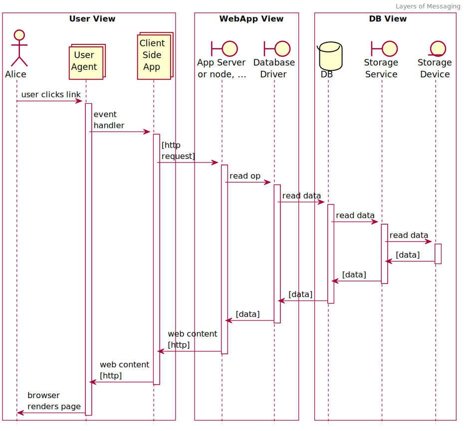

A successful test of a system results in a set of measurements. However, there are many ways to take measurements and they all serve to answer different questions. Where you take your measurements also determines what you measure.
Consider the following diagram:
This diagram illustrates a prototypical set of services and their inner service dependencies. This view only shows synchronous calls to keep the diagram simple.
User Impact
The outer-most layer of the onion is what the user interacts with. In most modern services, this is the browser. As well, most modern applications, there is an active client-side component which acts as part of the composed application, with local page state being pseudo-persistent except for cache controls and full reloads. This highlights how far designers will go to make interactions "local" for users to avoid the cost of long request loops.
As such, the browser is subject to any response times included within the inner service layers. Still, the browser represents the outer-most and thus most authentic vantage point from which to measure user impact of service time. This is called the User View in the above diagram.
Looking Inward
Beyond the outer layer, you'll usually find more layers. In terms of what these layers are called: " endpoint", "service", "web app", "app server", there is a ton of subjectivity. although the names change, the underlying mechanisms are generally the same. The naming conventions come more from local norms within a tech space or community of builders. One person's "App Server" is another's " RESTful endpoint". What is important to notice is how the layers form a cascade of dependencies down to some physical device which is responsible for storing data. This pattern will be durable in nearly every system you look at.
Between each layer is a type of messaging component. These are sometimes called "media", or " transport" in RFCs. Each connection between the layers carries with it a set of fundamental trade-offs that, if understood, can establish reasonably durable minimum and maximum response times in the realm of possibilities.
For example, a storage device that is using NVMe as the host bus will, all else being equal, perform better than one service by a SATA channel. The specification for these "transports" say as much, but more importantly, real-world results back this up.
Understanding of the connections between each layer of abstraction is essential. At least, knowing the limits of technology at each layer, theoretical and practical is useful. Not to fear, a good testing setup can help you find these limits in specific terms.
Service Time Math
There will be a limit to how much data you can collect, and from which vantage points you can get it from. That means that sometimes you need to do some sleuthing with the data you have in order to tease out important details.
For example, say you have a good set of metrics for the app server in the diagram above. You know that the p95 service time is 121ms. Suppose you also know the p95 service time for the same calls at the DB layer. That is 32ms. If you don't know anything else about the calls, you can at least infer that the difference between these two layers is around 89ms (P95). That means that, for 5 out of every 100 operations, somewhere between your web app, your db driver, and your db service, you are spending at least 89ms doing something. This could be in the active processing, or in the passive transport of data -- the ethernet layer or otherwise. At least you can set book-end expectations between these layers.
Applied Principles
outside-in
Generally speaking, to understand how service times impact users, you generally want to measure from outer vantage points. To understand why the user sees these service times, you look at the inner layers.
detailed enough
When constructing layered views of your metrics, it is useful to add the elements you need and can instrument for metrics first. The above diagram goes to a degree of detail that may be too much to be useful in a practical analysis scenario. You could add placeholders to capture elements of the transport and inter-connections, additional internal subsystems of layers, etc. This is only useful if it helps tell an important story about the details of your system, i.e. details that you can use to take action for an improvement or to help you focus effort in the right place.
clear labeling
When you are capturing metrics, make sure that the nesting and vantage points are very clear to observers. A little detail in naming goes a long way to keeping operators honest with each other about what is actually happening in the system.
contextual views
As you learn to build operational views of systems, be sure to tailor them to the user-impacting services that your business is measured by. This starts on the outside of your system, and cuts through critical paths, focusing on those areas which have the highest variability in responsiveness or availability. It includes the details that need the most attention. You can't start from a rich dashboard of data that includes the kitchen sink to arrive at this. It is an art form that you must constantly practice in order to keep operational relevant. Yes, there will be long-standing themes and objectives, but the more ephemeral factors need to be treated as such.